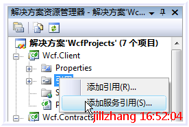
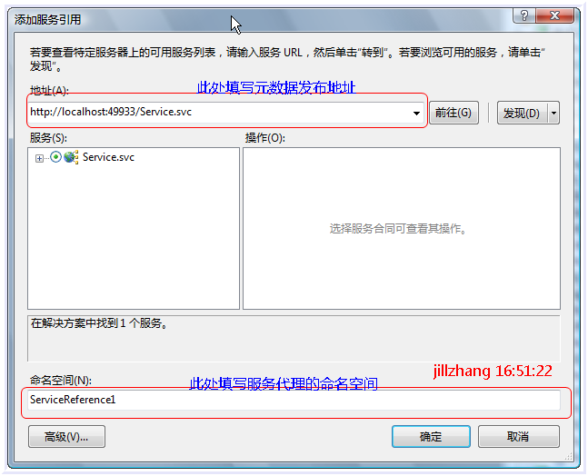
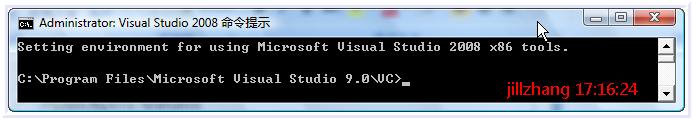
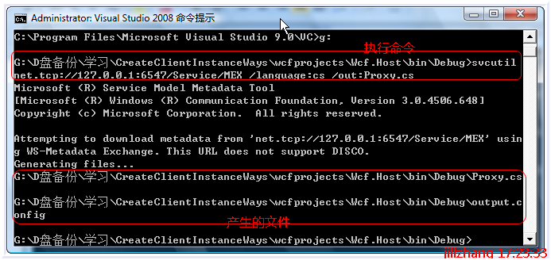
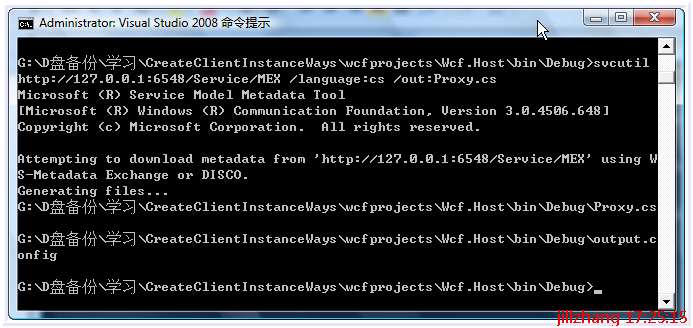
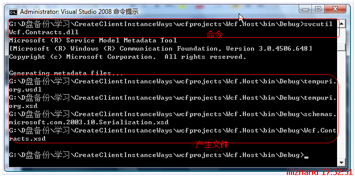
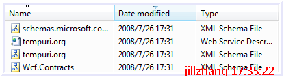
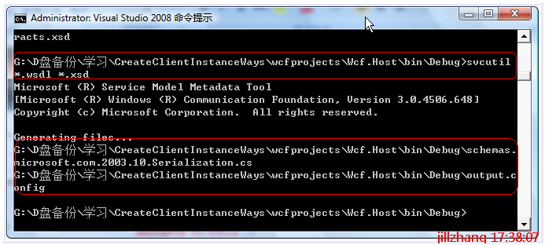

在WCF中有两种不同的方法可以用于创建客户端服务对象,他们分别为:
1. 代理构造法
2. 通道工厂法
本文会从实际应用的角度上,阐述两种方法的一些细节和优劣对比，希望通过学习本文，能掌握什么情况下使用什么样的方式来创建客户端服务代理对象，怎样创建客户端代理对象。本文重点在术，非道。
构造代理法
从名字中可以看出，使用本方法创建客户端服务代理对象，是调用了服务代理类的构造方法。这种方法非常符合创建对象的常规方法：通过new的方式产生类型实例。可在WCF中要使用此方法，却是需要一个前提：要首先具备代理类。所以产生代理类便是此种方法首先要解决的问题了，下面就来看下WCF中创建代理类的几种常见办法。
在WCF中，创建代理类，可以分为下面的几种情况：
第一种：知道服务元数据地址，通过在项目中添加服务引用。
第二种：知道服务元数据地址，通过svcutil.exe生成代理类和配置文件。
第三种：从服务契约所在的的程序集(dll，exe)中导出元数据，然后从本地元数据生成代理类。
第四种：知道元数据的地址，通过自定义的代码生成代理类。
下面分别详细的阐述四种方法的操作过程
第一种：知道服务元数据地址，通过在项目中添加服务引用。
这种方法非常适合初学者，生成代理类的难度基本为0，也是这几种生成方式中最为简单的。但前提必须事先知道元数据的发布地址。下面是操作过程：
在项目中单击右键，选择添加服务引用

出现如下的对话框

一般情况下，填写完下面的对话框就可以点击确定，生成代理类了，但有的时候，我们需要对代理类对特殊的设置，比如我们要生成异步操作，要更改字典集合为数组等，这时候可以点击上图中左下角的高级按钮。出现如下的对话框：
经过上面的处理，就能生成代理类了，但是通过此种方法产生代理类存在一个问题，这个问题和WCF联系不大，但还是比较重要的，比如服务端是java开发的，且采用的Soap1.1协议，那么采用上面这种方法，将无法产生匹配soap1.1的代理类，导致在调用服务的时候，出现如下的异常：
SOAP 版本可能不匹配: 出现意外的 Envelope 命名空间 http://schemas.xmlsoap.org/wsdl/。应为 http://schemas.xmlsoap.org/soap/envelope/。
这个是我在xml web service中的添加服务中发现的，新版本的添加服务引用仍热没有指定协议的设置。在xml web service中，解决上面问题的办法是采用wsdl.exe，然后指定参数/protocol:SOAP
第二种：知道服务元数据地址，通过svcutil.exe生成代理类和配置文件。
在WCF中的工具中Svcutil.exe是一个非常重要的工具，使用它，我们可以导出，导入，下载元数据，生成代理类，验证编译好的代理。如果我们已经知道元数据的发布地址，那么通过下面的操作，可以生成代理类
打开vs2008的命令行工具

Svcutil支持不同类型的元数据地址，如net.tcp://,http://等。下面分别进行演示：
元数据地址是net.tcp://格式：
svcutil net.tcp://127.0.0.1:6547/Service/MEX /language:cs /out:Proxy.cs

元数据地址格式是http://格式
svcutil http://127.0.0.1:6548/Service/MEX /language:cs /out:Proxy.cs

生成代理类的过程和上图类似，不再添加注释。
第三种：从服务契约所在的的程序集(dll，exe)中导出元数据，然后从本地元数据生成代理类。
这种方式是用来处理不发布元数据，直接从服务契约所在程序集中提取元数据并生成代理类的，操作要分为两步：
第一步：从程序集中生成元数据
svcutil Wcf.Contracts.dll

运行此命令之后，文件夹中将产生如下的几个文件：

第二步：从元数据中生成代理类代码
这一步将使用上一步中生成的wsdl和xsd等元数据文件，最终生成代理类：
svcutil *.wsdl *.xsd

通过上图，可以看到已经成功生成代理类schemas.microsoft.com.2003.10.Serialization.cs和客户端配置output.config
第四种：知道元数据的地址，通过自定义的代码生成代理类。
除了上面的生成代理类的方法，如果我们知道了元数据的地址，还可以通过自己的代码实现代理类的生成，自定义的方法为：
通过上面的方法，都可以得到代理类，在没有双工的情况下，服务的代理类是System.ServiceModel.ClientBase<IService>的派生类，代理类包含下面四种构造方式
 public ServiceClient() public ServiceClient(string endpointConfigurationName) : base(endpointConfigurationName) public ServiceClient(string endpointConfigurationName, string remoteAddress) : base(endpointConfigurationName, remoteAddress) public ServiceClient(string endpointConfigurationName, System.ServiceModel.EndpointAddress remoteAddress) : base(endpointConfigurationName, remoteAddress) public ServiceClient(System.ServiceModel.Channels.Binding binding, System.ServiceModel.EndpointAddress remoteAddress) : base(binding, remoteAddress)
public ServiceClient() public ServiceClient(string endpointConfigurationName) : base(endpointConfigurationName) public ServiceClient(string endpointConfigurationName, string remoteAddress) : base(endpointConfigurationName, remoteAddress) public ServiceClient(string endpointConfigurationName, System.ServiceModel.EndpointAddress remoteAddress) : base(endpointConfigurationName, remoteAddress) public ServiceClient(System.ServiceModel.Channels.Binding binding, System.ServiceModel.EndpointAddress remoteAddress) : base(binding, remoteAddress)
而如果服务中有双工Duplex，那么服务的代理类将不再继承System.ServiceModel.ClientBase<IService>，而是更改为：System.ServiceModel.DuplexClientBase<IDuplexService>，而且他的构造也会变成如下的四个：
public DuplexServiceClient(System.ServiceModel.InstanceContext callbackInstance) : base(callbackInstance) public DuplexServiceClient(System.ServiceModel.InstanceContext callbackInstance, string endpointConfigurationName) : base(callbackInstance, endpointConfigurationName) public DuplexServiceClient(System.ServiceModel.InstanceContext callbackInstance, string endpointConfigurationName, string remoteAddress) : base(callbackInstance, endpointConfigurationName, remoteAddress) public DuplexServiceClient(System.ServiceModel.InstanceContext callbackInstance, string endpointConfigurationName, System.ServiceModel.EndpointAddress remoteAddress) : base(callbackInstance, endpointConfigurationName, remoteAddress) public DuplexServiceClient(System.ServiceModel.InstanceContext callbackInstance, System.ServiceModel.Channels.Binding binding, System.ServiceModel.EndpointAddress remoteAddress) : base(callbackInstance, binding, remoteAddress)
通过调用上面代理类中任意的构造函数重载，都能创建客户端服务代理对象实例。具体使用方法可见实例项目Wcf.Client中的代码
通道工厂法
除了上面提到的代理构造法能够在客户端创建代理的对象实例，我们还可以通过通道工厂的方式(ChannelFactory)来完成同样的任务。而使用通道工厂也包含如下的几种使用情况
第一种：知道服务应用程序终结点的地址和所使用的绑定方式的情况下。
第二种：只知道服务元数据终结点的地址，不知道应用程序终结点的具体情况下。
第一种：知道服务应用程序终结点的地址和所使用的绑定方式的情况下
在这种情况下，客户端所掌握的服务应用程序终结点资料比较详细，使用起来也比较方便，典型的创建方法为：
static void CreateClientInstanceByChannel(Binding bind, EndpointAddress address)
这样的一种方法，给我们在调试程序的情况下，提供了更大的便利。
第二种：只知道服务元数据终结点的地址，不知道应用程序终结点的具体情况下。
在这种情况下，客户端只需要知道元数据终结点的地址，便能通过MetadataResover来获取元数据终结点对应的应用程序终结点，通过遍历应用程序终结点，还能对绑定方式进行刷选。下面的代码演示了这样一种用法。
static void CreateClientInstanceByMetaResover(EndpointAddress address) static bool EndPointIsDual(ServiceEndpoint endPoint)
到此，我们基本上已经对客户端类生成和客户端代理对象实例的创建有了一些认识，而且通过上面的描述，也说明了在什么情况下，应该采用那种方法，如何生成代理类，如何创建代理对象实例。下面就代理构造法和通道工厂法的优劣进行一下对比:
1) 代理构造法不依赖于服务契约，服务端和客户端耦合度比较低，但创建方法比较复杂，使用方法比较单一，对于一次产生多个代理对象等应用情形比较难以应对，综合看来，更适合生产环境中使用。
2) 通道工厂法使用比较简单，也比较灵活，但依赖于服务契约，不适合生产，更适合开发调试。
本文中，讲述了WCF客户端代理对象创建技术的一些基本常识和使用技巧。下篇文章将做一步深入：如何生成元数据需要证书验证的客户端代理